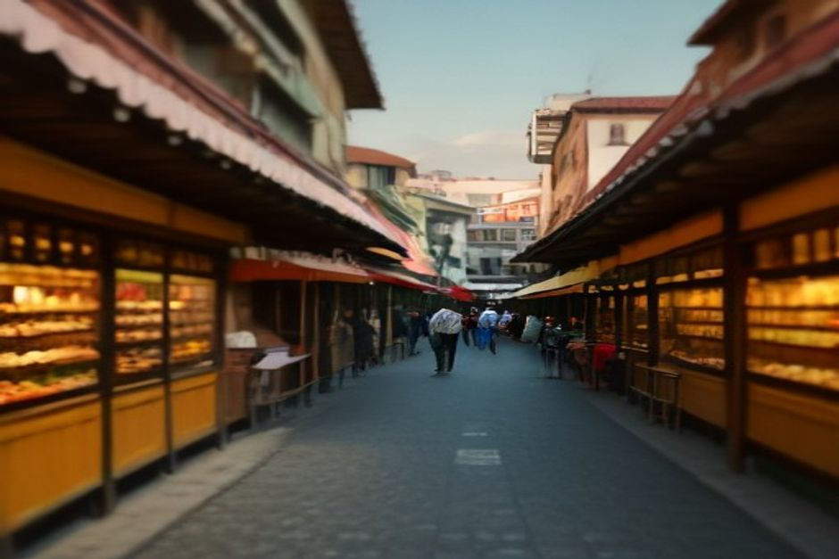
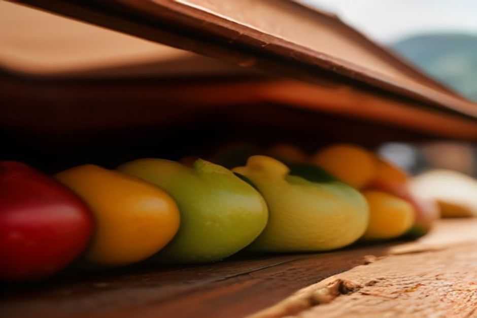

Se cercate "mercato Funchal" o "mercado dos lavradores" troverete decine di pagine che dicono solo "andateci". Qui trovate le cose che servono davvero: a che ora arrivare, quale piano vedere per primo, dove la frutta costa meno e perché vale la pena entrare anche solo per guardare l'edificio.
Mercato dei Lavradores: che cos'è e perché tutti lo nominano
Il Mercado dos Lavradores (in italiano suonerebbe come "mercato dei lavoratori", cioè dei contadini) è il mercato coperto di Funchal per frutta, verdura, fiori e pesce. Fu costruito nel 1940 per dare ad agricoltori e pescatori un vero padiglione al posto delle bancarelle all'aperto.
L'edificio è Art Déco, opera dell'architetto Edmundo Tavares. Facciata, ingresso principale e sala del pesce sono rivestiti da pannelli di azulejos di João Rodrigues, con scene di vita del mercato e della regione. Da solo basterebbe a giustificare una visita.
Dopo più di ottant'anni è ancora un mercato che lavora, non un pezzo da museo. Si trova a pochi minuti a piedi dal centro storico, la Zona Velha, quindi si inserisce facilmente in una passeggiata a Funchal.

Orari del mercato di Funchal e giorno migliore
Dal lunedì al venerdì il mercato è aperto circa dalle 7 alle 19. Il sabato chiude prima, alle 14. La domenica e nei giorni festivi è chiuso del tutto, quindi se avete un solo fine settimana a Madeira tenetene conto prima di organizzare la giornata.
Il momento migliore è il venerdì o il sabato mattina, meglio prima delle 10. I banchi dei produttori sono al loro meglio e la pescheria è in piena attività. Nei giorni in cui arrivano le navi da crociera, a metà mattina il piano terra si riempie in fretta. Arrivando presto, o in un pomeriggio feriale più tardi, trovate lo stesso mercato molto più tranquillo.
Cosa vedere al piano terra: frutta, verdura e fiori
Il piano terra e il cortile centrale sono dedicati a frutta, verdura e fiori. Troverete frutti che molti di noi non hanno mai visto da vicino: anona, tamarillo, frutto della passione, papaya e la piccola banana dolce di Madeira, accanto a mango e avocado più familiari.
I produttori di tutta l'isola portano la merce ogni giorno, quindi l'offerta cambia un po' con le stagioni. Ma il bello è l'insieme: colori e profumi di ciò che cresce davvero su un'isola atlantica subtropicale, tutto su un solo piano.
Molti venditori offrono assaggi gratuiti, soprattutto al piano di sopra. Si parla di frutto della passione, anona, tamarillo e canna da zucchero. Sono spesso dolcissimi, ed è proprio lo scopo: assaggiate un po' prima di decidere se comprare un sacchetto intero.
Le fioraie in costume tradizionale
Uno degli angoli più fotografati è quello delle fioraie. Vendono mazzi di strelitzia, orchidee e protee indossando la "saia à Madeirense", il costume tradizionale dell'isola: ricamato, colorato, con gonna a righe rosse e gialle e cuffia a punta.
Qualche banco oggi ci gioca un po' per le macchine fotografiche, ma il commercio dei fiori è antico davvero. L'esportazione di fiori di Madeira ruota attorno a questo edificio da generazioni. Se volete una foto, chiedete con gentilezza e comprate un fiore.
La pescheria al piano di sotto, da non saltare
Scendete. Il piano inferiore, rivestito dal pavimento al soffitto di azulejos blu e bianchi, è la pescheria di Funchal. Qui si vedono tonni interi e il pesce simbolo di Madeira, l'espada (pesce sciabola nero), pescato dalle barche locali fino a 800 metri di profondità e messo ogni mattina su lastre di marmo.
È più rumoroso, più freddo e meno pensato per i turisti rispetto al piano di sopra. Vale la discesa anche se non dovete cucinare la cena: è il ritratto più chiaro di ciò che esce davvero dall'Atlantico da queste parti.
I turisti pagano di più? Come evitare i banchi cari
In alcuni banchi sì. Le esposizioni fisse di frutta più vicine all'ingresso principale sono note per prezzi nettamente più alti rispetto ai banchi più all'interno o alla galleria superiore, dove fanno la spesa soprattutto i residenti.
- Chiedete sempre il prezzo prima di farvi pesare qualsiasi cosa.
- Superate la prima fila e confrontate: è prassi normale, non maleducazione.
- Guardate all'interno e al piano di sopra, dove i prezzi sono più in linea con quelli dei residenti.
- Assaggiate prima di comprare, senza sentirvi obbligati.
Quanto tempo serve e come inserirlo nella giornata
Per vedere entrambi i piani con calma bastano circa un'ora o poco più. È una buona prima tappa della mattina, prima di proseguire per la Zona Velha.
Se volete completare il quadro, c'è un legame diretto con il mare. Tonno ed espada sulle lastre di marmo arrivano da piccole barche che lavorano nelle stesse acque che attraversa una gita in barca privata con Chifbay verso Câmara de Lobos. Una mattina al mercato e un pomeriggio in mare vi mostrano i due capi della catena alimentare di Madeira: dove il pesce si vende e dove si pesca. Per un'idea di come funziona, date un'occhiata alla gita di giorno o al tramonto in barca; tutta la barca è per il vostro gruppo, fino a 5 persone.

Vale la pena? Il nostro parere
Se lo saltate, avrete comunque un bel viaggio a Madeira. Ma visitatelo con metodo, entrambi i piani, partenza mattutina, qualche domanda onesta sui prezzi, e capirete come mangia l'isola più che in quasi ogni altro posto dove passare un'ora a Funchal.